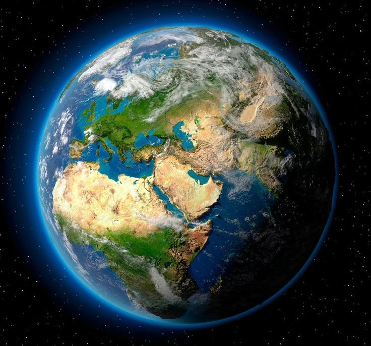
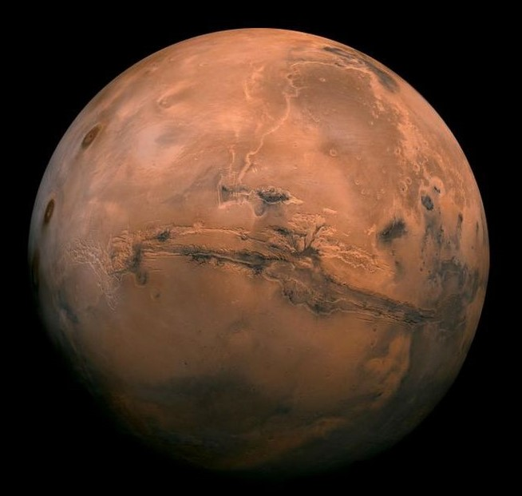
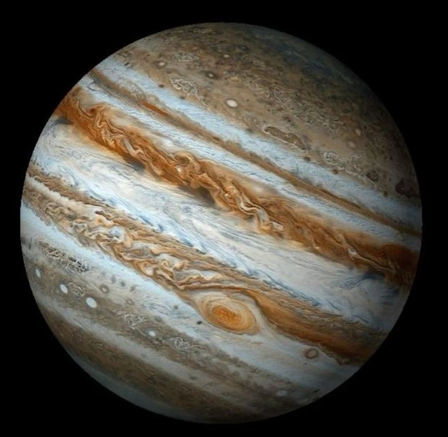
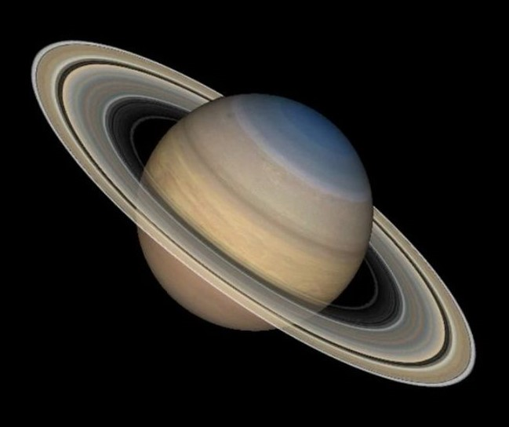
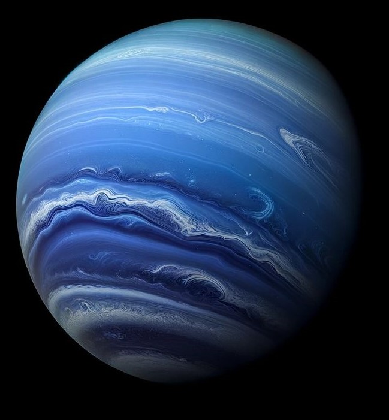

About Solar System
Earth
Earth is the only planet in the solar system known to support life, thanks to its unique mix of water, atmosphere, and the right temperatures. With an atmosphere made up of 78% nitrogen and 21% oxygen, Earth provides the perfect conditions for breathing and shields life from harmful radiation.
Mercury
Mercury is the closest planet to the Sun and has extreme temperature changes, from scorching heat during the day to freezing cold at night. It has no atmosphere, so it can't trap heat.

Venus
Venus is often called Earth's "sister planet" because it’s similar in size, but its atmosphere is made of thick clouds of sulfuric acid, making it the hottest planet in the solar system. Temperatures on Venus are hotter than Mercury, despite being farther from the Sun

Mars
Mars is known as the "Red Planet" because of its reddish appearance caused by iron oxide (rust) on its surface. Scientists believe Mars once had water and may have supported life in the past.
Jupiter
Jupiter is the largest planet in the solar system and is famous for its Great Red Spot, a massive storm that’s been raging for hundreds of years. It’s a gas giant, meaning it doesn’t have a solid surface.
Saturn
Saturn is best known for its stunning ring system made of ice and rock particles. It’s a gas giant and has over 80 moons, including Titan, which is larger than the planet Mercury.
Uranus
Uranus is unique because it rotates on its side, making its axis tilt nearly 98 degrees. It has a pale blue color due to methane in its atmosphere, and it’s one of the coldest planets in the solar system.

Neptune
Neptune, the farthest planet from the Sun, is known for its deep blue color and strong winds, which are the fastest in the solar system. It also has a giant storm called the "Great Dark Spot," similar to Jupiter's storm
